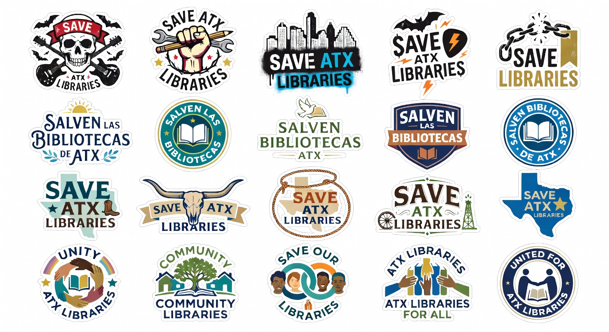

~3 minutes
Email the board
Write your library story and send it to board@austinisd.org. One story is easy to ignore — hundreds are not.
Open library story form →Not a second briefing — a menu. The home page has the full story and numbers. Start Here sends you straight to what you want to do: email the board, show up to a meeting, share the data, or order stickers.
Do something today
Each link goes to a different tool or page. No need to read everything first.
~3 minutes
Write your library story and send it to board@austinisd.org. One story is easy to ignore — hundreds are not.
Open library story form →~5 minutes
Board meetings are where cuts get approved. Reserve your three minutes and cite the numbers.
AISD board meetings →~2 minutes
Send a neighbor the home page or data sheet. Understanding the formula is step one.
Shop
20 vinyl designs — wear the message on laptops, bottles, and board meeting clipboards.

Browse & order →Go deeper
When you have more time — these pages hold the evidence and history.
Deficit, recapture, basic allotment, charts — every stat linked to public records.
financeial.html →Edgewood, Senate Bill 7, how recapture grew — court records and legislation.
history.html → · time.htmlEl briefing completo en español mexicano — mismos datos, mismo enfoque.
inicio.html →AISD budget office, TEA, Texas Tribune, and other primary records cited across the site.
View source list →Board meeting prep
Librarians are the cornerstone of a child's education. Say it in your own words — then say it at the mic.